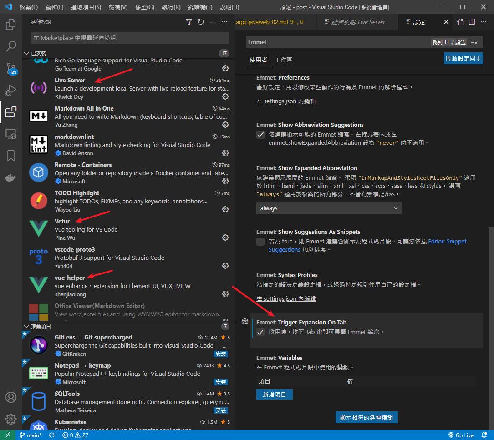
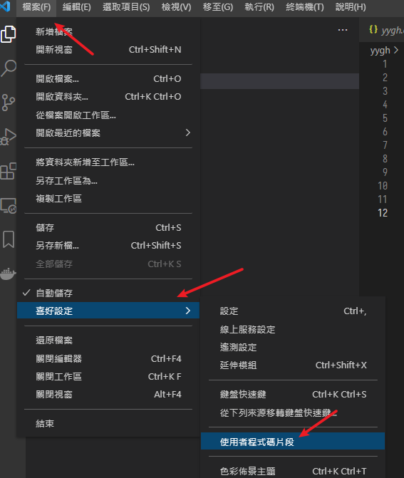
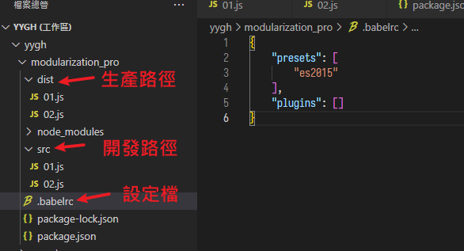
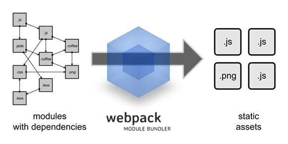

前端:ES6、Vue、Node.js
尚硅谷Spring筆記-04
ES6
- ECMAScript 6(簡稱ES6)，是 JavaScript 語言新一代的標準，在 2015 年 6 月正式發佈
- 泛指 ES5.1 版以後的新一代 JavaScript 語言標準
- Ecma International:歐洲一個定標準的組織，比較出名的有CD-ROM格式
特性
與傳統javascript的差別
- 聲明變量用
let取代var- 有作用域，在
{}之間 - 不可重複聲明
- 有作用域，在
- 常量用
const，且須顯式聲明 - 快速解構、快速定義:
let user = {name: 'Helen', age: 18}
let { name, age } = user
console.log(name, age)
let money=100
let type="cat"
let kitty={type,money}
console.log(kitty)
- 模板字串:用反引號包裹，其中可以換行，可以用
${}，{}中可以有運算
let name = "lucy"
let age = 17
let info = `My name is ${name} ,
I am ${age+1}`
console.log(info)
- 物件擴展運算符
...
//物件複製
let person1 = {name: "Amy", age: 15}
let someone1 = {...person1}
//console.log(someone1)
//物件合併
let age = {age: 15}
let name = {name: "Amy"}
let person2 = {...age, ...name}
console.log(person2)
- 箭頭函數
=>，類似lambda，左邊是參數，右邊是結果
//傳統方式定義函數
var f1 = function(a,b) {
return a+b
}
console.log(f1(5,8))
//es6使用箭頭函式定義
//參數 => 函數體
var f2 = (m,n) => (m+n)
console.log(f2(3,7))
Vue.js
- 尤雨溪開發的漸進式JavaScript框架
- 特點:去掉繁瑣的DOM操作
- 代碼以
new Vue物件開始，用el:綁定一個區塊，一個區塊就對應一個Vue物件 - Vue物件內以JSON格式設定屬性、方法等等
- 所以會有很多冒號
:、{}、,
- 所以會有很多冒號
使用
- 這裡IDE用VS code，首先下載插件

- 類似JQuery，使用前要先導入庫，為了方便把導入.js跟html模板寫在一起
- 先新增一個快速引用的模板

- 取名叫
vue-html.code-snippets，之後新增html頁面只要輸入vueh+tab就能快速完成引用
{
"vue htm": {
"scope": "html",
"prefix": "vuehtml",
"body": [
"<!DOCTYPE html>",
"<html lang=\"en\">",
"",
"<head>",
" <meta charset=\"UTF-8\">",
" <meta name=\"viewport\" content=\"width=device-width, initial-scale=1.0\">",
" <meta http-equiv=\"X-UA-Compatible\" content=\"ie=edge\">",
" <title>Document</title>",
"</head>",
"",
"<body>",
" <div id=\"app\">",
"",
" </div>",
" <script src=\"https://cdn.jsdelivr.net/npm/vue@2/dist/vue.js\"></script>",
" <script>",
" new Vue({",
" el: '#app',",
" data: {",
" $1",
" }",
" })",
" </script>",
"</body>",
"",
"</html>",
],
"description": "my vue template in html"
}
}
單向綁定
綁定標籤
- 格式:
v-bind:或直接簡寫成冒號:
<body>
<div id="app" v-bind:style="msg">123</div>
<script src="https://cdn.jsdelivr.net/npm/vue@2/dist/vue.js"></script>
<script>
new Vue({
el: '#app',
data: {
msg:'color:red'
}
})
</script>
</body>
雙向綁定
對被綁定的標籤操作會影響全部
格式:v-model
<body>
<div id="app">
{{keyword}}
<br />
<input type="text" :value="keyword" />
<br />
<input type="text" v-model="keyword" />
</div>
<script src="https://cdn.jsdelivr.net/npm/vue@2/dist/vue.js"></script>
<script>
new Vue({
el: '#app',
data: {
keyword: 'ABC'
}
})
</script>
</body>
綁定事件
- 格式:
v-on:或直接@，後面接事件例如click、change等等
<body>
<div id="app">
<button v-on:click="show()">點我觸發</button>
<button @click="show2()">點我觸發2</button>
</div>
<script src="https://cdn.jsdelivr.net/npm/vue@2/dist/vue.js"></script>
<script>
new Vue({
el: '#app',
data: {
},
methods:{
show(){
console.log("方法1")
},
show2(){
console.log("方法2")
}
}
})
</script>
</body>
條件渲染
就是if跟else，這邊還用了雙向綁定展示
- 格式
v-if=
<body>
<div id="app">
<input type="checkbox" v-model="bool"></input>
<br>
<div v-if="bool">選中</div>
<div v-else>沒選中</div>
</div>
<script src="https://cdn.jsdelivr.net/npm/vue@2/dist/vue.js"></script>
<script>
new Vue({
el: '#app',
data: {
bool: false
}
})
</script>
</body>
列表渲染
就是遍歷
- 格式
v-for="取出來的物件 in 列表"
<body>
<div id="app">
<div v-for="user in userList"> {{user.name}} -- {{user.age}} </div>
<div v-for="(user,index) in userList">
索引{{index}} -- {{user.name}} -- {{user.age}}
</div>
</div>
<script src="https://cdn.jsdelivr.net/npm/vue@2/dist/vue.js"></script>
<script>
new Vue({
el: '#app',
data: {
userList: [{ "name": "lucy", "age": 20 }, { "name": "mary", "age": 30 }]
}
})
</script>
</body>
Vue的生命週期
created()方法在頁面渲染之前mounted()方法在頁面渲染之後debugger插入調試斷點
<body>
<div id="app">
{{msg}}
</div>
</div>
<script src="https://cdn.jsdelivr.net/npm/vue@2/dist/vue.js"></script>
<script>
new Vue({
el: '#app',
data: {
msg: 'hello'
},
created() { //在頁面渲染之前執行
debugger
console.log('created.....')
debugger
},
mounted() {//在頁面渲染之後執行
debugger
console.log('mounted.....')
}
})
</script>
</body>
axios
又是一個庫，通常跟vue一起用，專門處理ajax
- 一樣先引用
<script src="https://cdn.jsdelivr.net/npm/axios/dist/axios.min.js"></script>
- 示範
<body>
<div id="app">
{{userList}}
</div>
<script src="https://cdn.jsdelivr.net/npm/vue@2/dist/vue.min.js"></script>
<script src="https://cdn.jsdelivr.net/npm/axios/dist/axios.min.js"></script>
<script>
new Vue({
el: '#app',
data: {
userList: []
},
created() {
// 在頁面渲染前執行，調用下面綁的方法得到json資料
this.getList()
},
methods: {
getList() {
// 使用axios做axaj請求
axios.get("user.json") // user.json已經另外寫好
.then(response => {
// 請求成功，將json中的資料取出賦到頁面上
this.userList = response.data.data.items
})
.catch(error => {
// 請求失敗
console.log(error)
})
}
}
})
</script>
</body>
user.json
{
"code": 200,
"message": "suc",
"data": {
"items": [
{
"name": "Tom",
"age": 18
},
{
"name": "Tommy",
"age": 5
}
]
}
}
- 用
axios.get("URL")發起請求 - 用
.then(response => {輸出回應response.data跟JQ類似，就是從回應中取data資料- 後面的
.data.items是自訂的user.json中的片段
element-ui
- 又是一個庫，提供模板可以線上快速生成網頁中的元素
- https://element.eleme.cn/#/zh-CN
- 後面在項目中邊用邊學
Node.js
-
是一個JavaScript引擎，Node.js內建了Chrome V8引擎，執行JavaScript效率很高
-
用來提供Backend For Frontend，BFF，即服務於前端的後端，在前端跟後端之間再包一層，可以:
- 修飾請求(比如來自手機或電腦的請求有些微差異)
- 組裝後台的數據(比如前端一個業務查詢要發給3個服務接口，靠這層來整合)
- 總之可以作為一個輕量、靈活的server端，降低溝通成本
-
下載安裝就不多說了，裝好後在VS code終端就可以調用
node指令，例如node -v查看版本
NPM
node.js中的依賴管理器，地位類似java的maven
- Node Package Manager，裡面所有模組都是開源免費，能想到的輪子幾乎都有人造好了
- 安裝Node.js時就會內建了，可以用
npm -v確認版本
建立模組
- 既然說類似maven，開始搭建專案也是用模組化的方式建構
初始化
- 到要建立模組的資料夾，預設模組名稱就是資料夾名稱
- 使用指令
npm init -y，參數-y表示使用預設值 - 資料夾下會建立出一個
package.json，這個就類似pom.xml
安裝依賴
- 指令
npm install 依賴名，例如npm install jquery - 若不指定版本就會安裝最新的，同時會看到多了
package-lock.json檔案，裡面會描述依賴鎖定的版本，換地方就是帶走這份文件，之後用npm install就會安裝列表中的依賴 - 另外會多出
node_modules子路徑，裡面放的就是新增的依賴包 - 其他參數:
npm install可縮寫成npm inpm i -D:相當於--save-dev，將包安裝到devDependencies節點，表示只在開發中使用npm i -g:安裝到全局，即電腦主機中的路徑npm update:更新npm uninstall:移除
ES6模組規範
- 在模組根路徑下的src資料夾，新增2個.js腳本
// 01.js
export default {
getList() {
console.log('01中的某方法')
},
save() {
console.log('01中的某方法-2')
}
}
// 02.js
import something from "./01.js"
something.getList()
something.save()
// package.json
{
"type": "module",
}
- 另外，在node.js 13.2.0版本以上，直接這樣用會報錯
SyntaxError: Cannot use import statement outside a module - 需要到
package.json聲明"type": "module",
babel轉碼
了解即可
- 在舊版的node.js只能運行ES5版本，所以需要先把ES6轉碼成ES5，最常見就是透過babel轉碼器
- 指令
npm install -g babel-cli - 檢查
babel --version - 在模組內安裝轉碼包，指令
npm install -D babel-preset-es2015 - 在模組根路徑新增設定檔
.babelrc
{
"presets": [
"es2015"
],
"plugins": []
}
- 指令
babel src -d dist，將/src下全轉碼到/dist路徑

Webpack

- 打包工具，可以把模組下各種資源都包成一個bundle
- 使用方法跟剛剛的babel轉碼器差不多，就是下載、配置、執行打包
- 這些玩意全都被
vue-cli集結，就不多說了
vue-cli
- 俗稱腳手架，可以看做前端的springboot，快速處理以上那些麻煩事，配置整合一氣呵成
- 安裝:
npm i -g @vue/cli-init - 測試:
vue --version - 初始化專案:
vue init webpack vue-demo - 之後會有一連串初始設定，可以無腦enter，然後就會看到項目的骨架已經搭建完成，說明如下
專案目錄
|-- build // 項目構建(webpack)相關代碼
| |-- build.js // 生產環境構建代碼
| |-- check-version.js // 檢查node、npm等版本
| |-- dev-client.js // 熱載入相關
| |-- dev-server.js // 構建本機伺服器
| |-- utils.js // 構建配置公用工具相關
│ |-- vue-loader.conf.js // vue載入器
| |-- webpack.base.conf.js // webpack基礎配置
| |-- webpack.dev.conf.js // webpack開發環境配置
| |-- webpack.prod.conf.js // webpack生產環境配置
|-- config // 專案開發環境配置
| |-- dev.env.js // 開發環境變數
| |-- index.js // 專案一些配置變數
| |-- prod.env.js // 生產環境變數
| |-- test.env.js // 測試環境變數
|-- node_modules // 專案依賴的模組
|-- src // 源碼目錄
| |-- components // vue公共組件
| |-- store // vuex的狀態管理
| |-- router // 前端路由
| |-- App.vue // 頁面入口檔（根元件）
| |-- main.js // 程式入口檔，載入各種公共元件（入口js檔）
|-- static // 靜態檔，比如一些圖片，json資料等
| |-- data // 群聊分析得到的資料用於資料視覺化
|-- .babelrc // ES6語法編譯配置
|-- .editorconfig // 定義代碼格式
|-- .gitignore // git上傳需要忽略的檔案格式
|-- README.md // 專案說明
|-- index.html // 入口頁面
|-- package.json // 專案基本資訊
上次修改於 2022-01-14